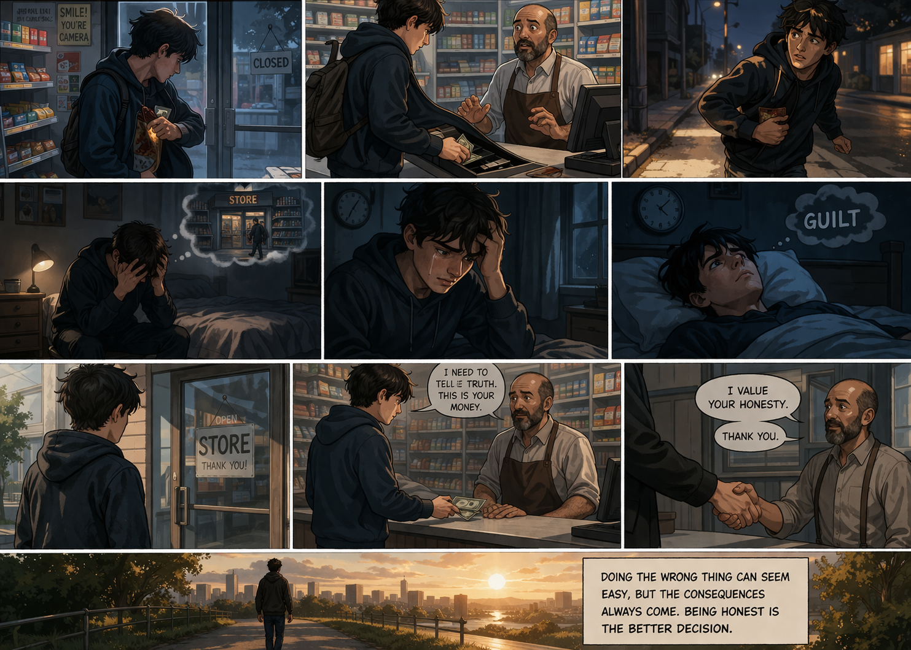

Hello Everyone
This is my little blog about my work to improve my English. You can see the process
Mental Map
A mind map created using HTML and CSS that shows the tools I use to improve my English skills and grow professionally in my work.

About Guatapé
A professional email expressing interest in a position at a company, highlighting skills, experience, and motivation to be hired
Brochure
A brochure presenting my goal of becoming an excellent developer, highlighting my motivation, learning path, and commitment to continuous improvement
Chronicle
A short chronicle about James Gosling, the creator of Java, highlighting his contributions to programming and the impact of his work on modern software development.
Critical Thinking and Media Literacy
Critical thinking and media literacy are essential skills in today’s digital world. They help us analyze information, question sources, and identify reliable content. By developing these abilities, we can make better decisions and avoid being misled by false or biased information.
Crime and Punishment Story
This is a story about crime and punishment. It shows us how a bad decision can change a person’s life.
John was a young man who needed money. One day, he decided to steal from a little store. Nobody saw him. In the beginning, he felt happy because he had the money, but later, he began to feel guilty and nervous. He could not sleep well. He was thinking about the theft all the time.
A few days later, John decided to come back. He told the truth and returned the money. The owner of the store valued his honesty.
John taught an important lesson: Doing the wrong thing can seem easy, but the consequences always come. Being honest is the better decision.
